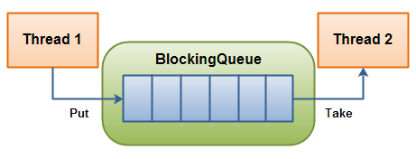
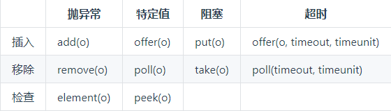

JUC提供了一系列场景的并发安全队列，按照实现方式的不同可分为阻塞队列和非阻塞队列，前者使用锁实现，后者使用CAS非阻塞算法实现。
非阻塞队列 ConcurrentLinkedQueue ConcurrentLinkedQueue是线程安全的无界非阻塞 队列，其底层使用单向链表实现，对于入队和出队操作使用CAS来实现线程安全，因此执行该队列的方法失败不会导致线程阻塞。
类图结构
底层实现 1 2 3 4 public ConcurrentLinkedQueue () head = tail = new Node<E>(null ); }
1 2 3 4 5 6 7 8 9 10 11 12 13 14 15 16 17 18 19 20 21 22 23 24 25 26 27 private transient volatile Node<E> head;private transient volatile Node<E> tail;private boolean casTail (Node<E> cmp, Node<E> val) return UNSAFE.compareAndSwapObject(this , tailOffset, cmp, val); } private boolean casHead (Node<E> cmp, Node<E> val) return UNSAFE.compareAndSwapObject(this , headOffset, cmp, val); } private static final sun.misc.Unsafe UNSAFE;private static final long headOffset;private static final long tailOffset;static { try { UNSAFE = sun.misc.Unsafe.getUnsafe(); Class<?> k = ConcurrentLinkedQueue.class ; headOffset = UNSAFE.objectFieldOffset (k.getDeclaredField("head" )); tailOffset = UNSAFE.objectFieldOffset (k.getDeclaredField("tail" )); } catch (Exception e) { throw new Error(e); } }
1 2 3 4 5 6 7 8 9 10 11 12 13 14 15 16 17 18 19 20 21 22 23 24 25 26 27 28 29 30 31 32 33 34 35 36 37 38 private static class Node <E > volatile E item; volatile Node<E> next; Node(E item) { UNSAFE.putObject(this , itemOffset, item); } boolean casItem (E cmp, E val) return UNSAFE.compareAndSwapObject(this , itemOffset, cmp, val); } void lazySetNext (Node<E> val) UNSAFE.putOrderedObject(this , nextOffset, val); } boolean casNext (Node<E> cmp, Node<E> val) return UNSAFE.compareAndSwapObject(this , nextOffset, cmp, val); } private static final sun.misc.Unsafe UNSAFE; private static final long itemOffset; private static final long nextOffset; static { try { UNSAFE = sun.misc.Unsafe.getUnsafe(); Class<?> k = Node.class ; itemOffset = UNSAFE.objectFieldOffset (k.getDeclaredField("item" )); nextOffset = UNSAFE.objectFieldOffset (k.getDeclaredField("next" )); } catch (Exception e) { throw new Error(e); } } }
常用方法
offer ：通过CAS操作来控制某时只有一个线程可以添加元素到队列末尾，进行CAS竞争失败的线程会不断自旋，直至成功，其余出入队操作均是如此 。相比阻塞算法，这是使用CPU资源换取阻塞所带来的开销。add ：调用offer方法。poll ：该方法在移除队首元素时，只是简单地使用CAS操作把节点的item值设置为null，然后重新设置head到下一个节点。移除的对象会在GC时被回收。peek ：peek方法的实现与poll类似，只是没有删除步骤。另外，在第一次调用peek操作时，会删除哨兵节点，并让head指向队列的第一个元素或者null。size ：该方法遍历链表计数，由于无锁策略，并发环境下结果并不准确。问：为什么不使用一个原子变量count来记录元素个数？因为这需要保证“入队操作+(count++)”或者“出队操作+(count—)”是原子操作，而ConcurrentLinkedQueue采用CAS无阻塞算法无法做到这一点。remove ：删除遍历时第一个匹配的元素。contains ：遍历链表查找元素，由于无锁策略，该方法并发环境下不准确。
延迟更新策略 通过对offer和poll方法的分析，我们发现tail和head是延迟更新的，两者更新触发时机为：
tail更新触发时机：tail的下一个节点不为null时，定位真正的队尾，找到队尾节点并完成插入之后才会通过casTail进行tail更新；当tail的下一个节点为null时，只插入节点不更新tail。 head更新触发时机：当head的item域为null时，定位真正的队头，找到队头节点并完成删除之后才会通过updateHead进行head更新；当head的item域不为null时，只删除节点不更新head。
在高并发写（大量出队入队）的情景下，通过延迟更新head和tail，减少了head和tail更新（CAS自旋）带来的CPU损耗 。
适用场景 ConcurrentLinkedQueue通过无锁做到了更高的并发量，在并发量特别大的情况下，是个不错的选择，性能上好很多。
阻塞队列 BlockingQueue BlockingQueue通常用于生产者消费者场景。

一个线程将会持续生产新对象并将其插入到队列之中，直到队列达到它所能容纳的临界点。也就是说，它是有限的。如果该阻塞队列到达了其临界点，负责生产的线程将会在往里边插入新对象时发生阻塞。它会一直处于阻塞之中，直到负责消费的线程从队列中拿走一个对象。 负责消费的线程将会一直从该阻塞队列中拿出对象。如果消费线程尝试去从一个空的队列中提取对象的话，这个消费线程将会处于阻塞之中，直到一个生产线程把一个对象丢进队列。
BlockingQueue常见方法 BlockingQueue 具有 4 组不同的方法用于插入、移除以及对队列中的元素进行检查。如果请求的操作不能得到立即执行的话，每个方法的表现也不同。这些方法如下:

四组不同的行为方式解释:
抛异常: 如果试图的操作无法立即执行，抛一个异常。
特定值: 如果试图的操作无法立即执行，返回一个特定的值(常常是 true / false)。
阻塞: 如果试图的操作无法立即执行，该方法调用将会发生阻塞，直到能够执行。
超时: 如果试图的操作无法立即执行，该方法调用将会发生阻塞，直到能够执行，但等待时间不会超过给定值。返回一个特定值以告知该操作是否成功(典型的是 true / false)。
另外，BlockingQueue不接受null值，插入null会导致NullPointerException。
BlockingDeque BlockingDeque是一个双端队列，我们可以从队列两端进行入队和出队操作。该接口继承自BlockingQueue接口。
在线程既是一个队列的生产者又是这个队列的消费者的时候可以使用到 BlockingDeque。如果生产者线程需要在队列的两端都可以插入数据，消费者线程需要在队列的两端都可以移除数据，这个时候也可以使用 BlockingDeque。
BlockingDeque常见方法
BlockingQueue实现类 LinkedBlockingQueue
LinkedBlockingQueue是一个有界 链表，创建时可指定容量，默认上限为Integer.MAX_VALUE（没指定就是无界），由原子变量计数器count计数。其内部以 FIFO的顺序对元素进行存储。
如下图所示：
LinkedBlockingQueue对头、尾节点的操作分别使用了单独的独占锁从而保证了并发下出入队的正确性，竞争锁失败的线程进入相应的AQS阻塞队列。头尾节点的独占锁都有一个自己的条件队列，用于存放队列空(满)时执行take(put)操作的被阻塞的线程。另外，有两个独占锁意味着该队列可以同时进行出入队操作，因此count必须要使用原子变量 。
注意：LinkedBlockingQueue的remove方法执行时会同时获取takeLock和putLock。
ArrayBlockingQueue
ArrayBlockingQueue是一个有界 数组，创建时必须指定容量，并且一旦指定容量便不能更改。其内部以 FIFO的顺序对元素进行存储。
如下图所示：
ArrayBlockingQueue只有一个独占锁，这个锁的粒度较大，只要是对数组更改就必须加锁，因此不能同时进行入队出队操作 。其中offer和poll操作通过简单的加锁实现，而put和take则使用锁加条件变量实现。另外，ArrayBlockingQueue的size方法相比LinkedBlockingQueue则是完全精确的，因为计算前加了全局锁。
PriorityBlockingQueue
PriorityBlockingQueue是一个无界 二叉堆（数组实现），每次出队的元素都是堆的根节点，保证返回的是优先级最高(低)的元素。 默认使用对象的compareTo方法提供比较规则，因此入队元素必须实现Comparable接口。如果需要自定义比较规则，也可在创建队列时传入Comparator比较器。
PriorityBlockingQueue的数组是可自动扩容 的，其默认初始容量为11。当当前元素个数>=容量时会通过CAS算法扩容。allocationSpinLock是个自旋锁，其使用volatile修饰和CAS操作 来保证同时只有一个线程可以扩容队列，状态为0表示当前没有进行扩容，状态为1表示正在进行扩容。
如下图所示：
PriorityBlockingQueue只有一个条件变量notEmpty，存放take操作时因队列空而阻塞的线程，因为该队列是无界队列，所以可以一直put，没有notFull条件变量。
使用案例：
1 2 3 4 5 6 7 8 9 10 11 12 13 14 15 16 17 18 19 20 21 22 23 24 25 26 27 28 29 30 31 32 33 34 35 public class PriorityBlockingQueueTest static class Task implements Comparable <Task > private int priority; private String taskName; public Task (int priority, String taskName) this .priority = priority; this .taskName = taskName; } @Override public int compareTo (Task o) if (this .priority >= o.priority) return 1 ; else return -1 ; } public void printTask () System.out.println(taskName + ":" + priority); } } public static void main (String[] args) PriorityBlockingQueue<Task> priorityBlockingQueue = new PriorityBlockingQueue<Task>(); Random random = new Random(); for (int i = 0 ; i < 10 ; i++) { Task task = new Task(random.nextInt(10 ), "taskName" +i); priorityBlockingQueue.offer(task); } while (!priorityBlockingQueue.isEmpty()){ priorityBlockingQueue.poll().printTask(); } } }
输出为：
1 2 3 4 5 6 7 8 9 10 taskName1:1 taskName7:2 taskName4:3 taskName0:3 taskName9:4 taskName5:7 taskName2:8 taskName6:9 taskName8:9 taskName3:9
DelayQueue
DelayQueue是一个无界 阻塞延迟队列，队列中的每个元素都有一个过期时间，每个元素都必须实现java.util.concurrent.Delayed接口 ：
1 2 3 public interface Delayed extends Comparable <Delayed > long getDelay (TimeUnit unit) }
出队时判断元素是否过期，只有过期元素才会出队列 ，队列头元素是最快要过期的元素。
由类图知，DelayQueue内部使用PriorityQueue存放数据。
SynchronousQueue SynchronousQueue 是一个特殊的队列，它的内部同时只能够容纳单个元素。如果该队列已有一元素的话，试图向队列中插入一个新元素的线程将会阻塞，直到另一个线程将该元素从队列中抽走。同样，如果该队列为空，试图向队列中抽取一个元素的线程将会阻塞，直到另一个线程向队列中插入了一条新的元素。 据此，把这个类称作一个队列显然是夸大其词了。它更多像是一个汇合点。
BlockingDeque实现类 LinkedBlockingDeque BlockingDeque唯一的一个实现类。LinkedBlockingDeque是一个有界链表双端队列，默认容量为Integer.MAX_VALUE。但与LinkedBlockingQueue不同的是，该队列不能同时进行出入队操作，因为只有一个独占锁 。并且count计数器不是原子变量，size方法会在调用count时加锁，因此该方法返回值是精确的。
BlockingQueue实现生产者消费者 1 2 3 4 5 6 7 8 9 10 11 12 13 14 15 16 17 18 19 20 21 22 23 24 25 26 27 28 29 30 31 32 33 34 35 36 37 38 39 40 41 42 43 44 45 46 47 48 49 50 51 52 53 54 55 56 57 58 59 60 61 62 public class Test static BlockingQueue<Integer> blockingQueue = new ArrayBlockingQueue<Integer>(10 ); static class Producer implements Runnable BlockingQueue<Integer> blockingQueue; public Producer (BlockingQueue<Integer> blockingQueue) this .blockingQueue = blockingQueue; } @Override public void run () while (!Thread.interrupted()){ try { blockingQueue.put(0 ); } catch (InterruptedException e) { e.printStackTrace(); } System.out.println(Thread.currentThread().getName()+"生产了" +0 ); } } } static class Consumer implements Runnable BlockingQueue<Integer> blockingQueue; public Consumer (BlockingQueue<Integer> blockingQueue) this .blockingQueue = blockingQueue; } @Override public void run () while (!Thread.interrupted()){ Integer integer = null ; try { integer = blockingQueue.take(); } catch (InterruptedException e) { e.printStackTrace(); } System.out.println(Thread.currentThread().getName() + "消费了" + integer); } } } public static void main (String[] args) throws InterruptedException Producer producer1 = new Producer(blockingQueue); Consumer consumer1 = new Consumer(blockingQueue); Consumer consumer2 = new Consumer(blockingQueue); ExecutorService executorService = Executors.newCachedThreadPool(); executorService.execute(producer1); executorService.execute(consumer1); executorService.execute(consumer2); Thread.sleep(1000 ); executorService.shutdownNow(); } }